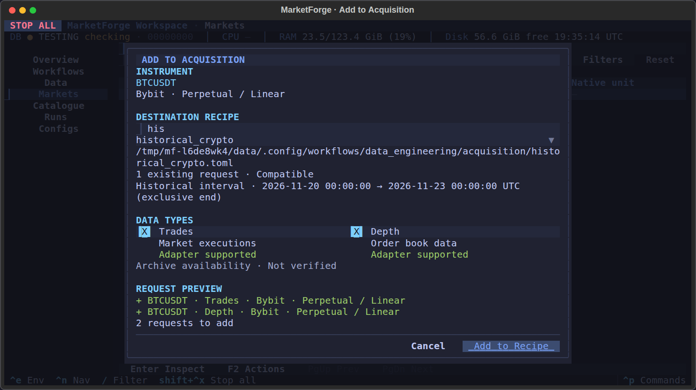

Interactive Forge workspace
Forge provides a Textual application alongside the direct CLI. Install Forge with Python 3.12 or newer on Linux or macOS. Textual is included in the Forge lockfile. Use an interactive terminal. Forge defaults to production and its workspace header shows the selected environment and verified connectivity. The application resolves the same project root, settings, and credentials as the CLI.
mf tui
mf tui --production
mf tui --testing
A separate workspace or settings file can be selected with the global options.
mf --project-root /path/to/marketforge --config /path/to/settings.toml tui --testing
Startup reads local workspace evidence. Network acquisition, market refresh, processing, verification, and storage mutation are explicit actions.
Navigation
| Area | Contents |
|---|---|
| Overview | Catalogue, recorded availability, recent activity, storage, stage inventory, and recent runs |
| Workflows | Pipeline, acquisition, normalization, merge, conversion, and import |
| Data | Raw, Normalized, Merged, and Converted |
| Markets | Instruments, observations, policies, and ranking snapshots |
| Catalogue | Exchanges, Instruments, Specifications, and normalization Profiles |
| Runs | Retained reports, indexed runs, and operations owned by this application |
| Configs | General application settings and Normalize, Merge, Convert, and Pipeline runtime files |
Press Ctrl+P to find actions. Registration commands remain in the palette, including raw registration and supported recovery. Workflows also has an Import tab for raw preservation and a Registration tab for verified declarations.
Arrow keys move the cursor and Enter opens details. Double-click a row or
click a recipe name to inspect its source, interval, and configuration path.
Use F2 → Edit for the form or Edit TOML for a private draft in the
configured editor. Escape returns to the list with its state intact.
Right-click a row, use F2, or press Shift+F10 to open its actions.
F3 opens readable retained evidence. Tab and Shift+Tab move focus.
Use / for search, Ctrl+R to reload, Page Up and Page Down to change pages,
and Ctrl+N to toggle navigation.
Use Filters for structured constraints and Reset to clear them. Click a supported heading or choose a sort in the filter form. The arrow indicates direction, and a second click reverses it. Registry sorting and filtering happen before pagination. Turnover ordering keeps native denominations separate. Missing numeric and time values sort last. The result strip displays the current page and applied criteria.
| Inventory | Structured filters |
|---|---|
| Merged and Normalized | Publication ID, exchange, instrument identity, instrument type, market, trade or depth content, observed interval |
| Raw | Archive ID, origin and raw source, exchange, type and market, instrument or scope, feed, assets, status, and interval |
| Markets instruments | Exchange and market lists, exact symbol and symbol pattern, base, quote and settlement, instrument type, status, observation availability |
| Ranking snapshots | Comparison currency and complete or partial universe, with policy and snapshot search |
| Converted | Target quote and recorded stream kinds |
| Catalogue instruments | Exchange, symbol, type, market, assets, status |
| Retained runs | Run ID, operation, recipe, recorded state, exchange, scope, started interval, minimum duration, recorded outputs |
Publication member constraints match the same constituent. Retained run context comes from retained reports and plans. Older records can lack scope or duration. A recorded running state has unconfirmed liveness.
Forms include selectors and optional Advanced fields. Copy command displays the equivalent quoted CLI invocation for use outside the app. Copy value requests clipboard transfer through the terminal. If terminal or tmux clipboard forwarding is disabled, the displayed text remains selectable.
Overview
The shared header identifies the active area as MarketForge Workspace · Overview, MarketForge Workspace · Configs, and so on. The monitoring bar shows registry connectivity and the selected environment, host CPU and RAM, free space on the data-root filesystem, and UTC time. A successful registry check verifies identity as well as connectivity. The full verified identity is available in the monitoring bar’s tooltip. Use Ctrl+E to switch environments.
The clock updates every second, host metrics every two seconds, and registry and disk checks every 20 seconds. Host CPU and available-memory sampling use Linux host counters. Unsupported metrics show a dash. Narrow layouts show RAM as a percentage. CPU and RAM at 90% or higher, and disk free space below 10%, are highlighted in yellow. At wider sizes, Instrument Universe stacks above Data Storage, while Market Data Availability stacks above Recent Activity. Each panel sizes to its own content. At narrow widths, the two stacks flow vertically.
- Instrument Universe counts canonical catalogue instruments, including instruments without stored history. The historical count uses complete raw records with identified instruments and retained processed membership. Other instrument types contribute to the headline total.
- Market Data Availability shows recorded Trades and Depth for each exchange, instrument type, and market category. Presence does not establish continuous history, full reconstruction, or independently verified integrity.
- Recent Activity shows the latest recorded result for Acquisition, Normalization, Merge, Conversion, and Pipeline. Independently timestamped pipeline stages can contribute their own evidence. A retained running record without a live owned execution has unknown liveness.
- Data Storage shows recorded inventory bytes. The known subtotal covers recorded managed raw archives, registered physical primary files, and committed indexed conversion outputs. Missing sizes remain unknown. The subtotal describes recorded inventory, and the monitor separately shows filesystem capacity.
- Data by Stage pages through Raw, Normalized, Merged, and Converted. Raw groups adjacent or overlapping nominal half-open archive intervals for the same canonical instrument and data kind. Normalized groups observed data by instrument and kind. Merged shows registered publications. Converted shows indexed output references, which are separate from registry publication IDs.
- Recent Runs shows recent retained and indexed executions with their recorded timestamps, recipes, outcomes, and durations.
Focus Data by Stage and use PgUp/PgDn to load another page. Press Enter or click the row to open metadata. Click a registry publication ID, converted output reference, or run ID cell to copy the complete identifier. Raw and Normalized group inspectors list their constituent identifiers and open the existing archive and publication inspectors. Those inspectors provide physical files, partitions where recorded, and available lineage and verification evidence. Use Data and Runs for deeper inspection.
Ctrl+R, entering Overview, and finishing a workspace operation reload the dashboard. An unavailable registry leaves host monitoring and retained local run evidence usable. Previously loaded summary values are marked stale after a failed refresh.
Pipeline and standalone workflows
Select a saved recipe in Workflows to enable the action bar. Validate opens the service result. Planning and preparation display blockers and retained evidence in the workspace. Run and Download confirm the target and environment. When a saved recipe is available, Forge validates it before review and refuses to dispatch a recipe that changed after review.
| CLI family | Main workflow controls | Other TUI actions and inputs |
|---|---|---|
| Acquisition | Validate, Plan, Map, Download | New, Edit, List, Sources and reviewed deletion are in recipe actions or the command palette. Plan uses cached discovery, with an optional local check and row limit. Map and Download support refresh and a request-rate override. Import and raw registration use their own managed actions. |
| Normalize | Validate, Prepare, Run | New, Edit, List, Show, Execute and Register are available from the palette or recipe/run actions. Prepare supports dry-run and acquisition recipe generation. Run accepts an exact recipe or prepared batch, with optional partial registration. |
| Merge | Validate, Prepare, Run | New, Edit, List, Show and Register are available from the palette or recipe/run actions. Prepare supports dry-run. Run accepts a recipe or pinned job. Use the publication selection action to define generation, interval and timeline ordering. |
| Convert | Validate, Prepare, Run | New, Edit, List and Show are available from the palette or recipe actions. Choose the binding source, target quote and reference trades in the recipe editor. Prepare supports dry-run. Run accepts a recipe or prepared request. Verified results can expose an indexed output reference. |
| Pipeline | Validate, Plan, Run | New and List are available from Workflows or the palette. Edit uses the saved recipe editor. Resume and Status accept a retained pipeline run ID. Run can stop at normalize.prepare. |
Registry-backed actions use the selected workspace environment. Runtime configuration uses Configs, and normalization profile actions are available under Catalogue → Profiles. CLI JSON and terminal presentation flags are handled through retained evidence and the TUI monitor. The Runs area provides status, logs and inspection across operations. Resume applies only where the underlying service supplies a supported recovery path.
Execution terminals
On a supported Linux desktop, Run opens the workflow in a resizable Ghostty terminal. The terminal runs the same CLI command and uses its native progress and result presentation. The main workspace stays available, and Ctrl+O opens the owned operation there. Use Runs to inspect its retained report and logs.
Pipeline runs use a single terminal by default. Stage execution → Window also opens the existing dedicated stage terminals. Press Ctrl+C, close an active execution terminal, or use Request Stop in the workspace to interrupt execution. A completed terminal stays open for scrolling and reading the result. Closing it at that point only closes the window.
If Ghostty cannot start the CLI worker, Forge can run the operation in the workspace with its in-app progress view. If the CLI worker was already authorized and its outcome is uncertain, inspect Runs before retrying.
Author recipes
New recipe opens the supported authoring form or asks you to choose a source route first. Acquisition and Pipeline start with an empty historical request. Add another entry for each additional scope or data kind. Each request carries its own exchange, instrument type, market and source scope.
- An asterisk marks required fields. A neutral count shows which required fields are blank. Validation checks the values that were supplied.
- Optional fields may be left blank. The form shows model defaults where available. A default shown as a hint applies when you omit the field.
- Enable Pipeline conversion to see its target quote and policy. Turning conversion off keeps the pending values in the form and omits the stage when saving. Advanced Options expands in place.
- Use Find to search registered records. Open the result dropdown, type to search within the results, then choose Use selection. Matching instrument symbols are distinguished by venue, type and market. The historical request form uses the registered symbol in an explicitly selected instrument scope. Other scope kinds use a source identifier.
- Use Validate to see configuration issues beside their fields. Validation focuses the first affected control when the model identifies one. Review recipe checks the fields and shows what will be saved. Escape from review returns to the populated form. Leaving an edited form asks before discarding pending changes.
- Tab and Shift+Tab move between fields, selectors, help and actions. Enter confirms an open dropdown selection. Use ? for field help and Docs for the workflow documentation.
- Configuration validation, preparation and execution are separate. Use Plan or Prepare to resolve evidence and prerequisites supported by the workflow, then review before Run. Use Map to check historical archive availability separately.
Normalization accepts historical requests, acquisition recipes, or exact raw archive selections in the testing workspace. Resolve profiles checks the selected archives before showing compatible profile choices. Merge accepts a normalization recipe, explicit file dataset IDs, or selected normalized publications. The publication route uses the service's observed bounds when the interval is left blank. Use Move up and Move down (or Ctrl+Up and Ctrl+Down) on the stream list to author explicit engine ranks. Keeping the suggested order preserves the service's implicit ranking.
For Conversion, select publication as the source route and use Find to browse registered merged publications, or start from a publication in the Data workspace. Use Edit on the saved recipe to set policy and select internal reference streams. Browse external trade references checks the source mode and lists reference publications and their trade streams. Preparation validates the resulting bindings and routes.
In Markets → Instruments, right-click a row or press F2. Eligible instruments offer Add to Acquisition, Add to Pipeline, and Inspect in that order. Use Markets search and filters to browse the registry. Refresh Market Observations and Synchronize Market Instruments remain available in the command palette with their existing environment and confirmation checks. Rankings show snapshots and offer View Ranking Results. Policies offer inspection, TOML editing, and validation.
Both Add actions open the same dialog with the exact market identity already filled in. Search for an existing recipe by name and select it to see its path, current request count, compatibility, and half-open UTC interval. Create a recipe in Workflows first if the library is empty.

Under Data Types, select Trades (market executions), Depth (order book data), or both. Each kind becomes a separate instrument-scoped request. The dialog shows source-adapter support. Archive availability for the selected interval is verified later during discovery or preparation. Binance historical archives support Trades only. OKX derivatives and Bybit options require broader scopes and can be configured separately in Workflows.
Opening the menu on a marked row uses the basket in selection order. An unmarked row targets that row alone. If a data type is unsupported for any selected instrument, the checkbox is disabled and the dialog names the affected instruments. To add that kind to a compatible subset, adjust the Markets selection.
Request Preview shows the validated additions and marks exact requests already included. Add to Recipe is enabled when there is at least one new request. Saving appends only those requests and preserves the interval, comments, and existing settings, including Pipeline normalization, merge, conversion, and reference options. If another editor changes the file, clear and reselect the destination to review the updated recipe. Saving only updates the recipe file.
Acquisition recipes can seed normalization and conversion. Normalization recipes can seed merge or conversion, or replace the single source of a compatible derived merge that has no pinned publication IDs. Merge recipes can seed conversion. Conversion source routes still resolve committed merge inputs during preparation. Creating or editing a recipe does not execute it.
Data and maintenance
Merged lists registered publications. Normalized lists streams within registered publications. Inspect a publication to see registry and Engine IDs, stream membership, and paged primary-file identities. A primary-file verification checks the named file and shared manifest checksum. The result states its verification scope. Execution and verification evidence retain original timestamps and units. Observed event endpoints are inclusive and do not establish continuity for the requested half-open interval.
Converted browses known commits from the newest 100 converter execution receipts. Forge reads metadata from their known managed manifests. Missing or invalid manifests remain identifiable from the retained receipt. This source does not enumerate every local conversion and does not infer registry registration. The Overview keeps its separate shorter evidence window.
Raw uses local archive registry identities. Reloading reads retained metadata. Archive verification and reconciliation can update registry state, and dataset verification hashes the requested file and shared manifest. These actions run only when selected.
Review and apply storage cleanup using the saved preview. Forge binds apply to the displayed preview and revalidates targets before deleting anything. Ranking deletion also checks reviewed snapshot identities. Database restore accepts a verified backup and an explicitly named fresh disposable testing database. Existing storage and database safeguards remain in force.
Active work and shutdown
Ctrl+O opens the owned operation and its current activity. Pipeline and acquisition progress comes from their typed snapshots. Processing shows phases and retained results. Inner-engine throughput, ETA, and row progress are unavailable in Forge. An open operation gains report, output, and recovery actions as evidence becomes available. When the operation finishes while you browse elsewhere, Forge shows a notification and keeps your current view.
Changing screens leaves owned work running. Workspace ownership lasts for the mutation, including child and reader cleanup. Ctrl+C opens interruption confirmation. Ctrl+Q with work active offers Back to keep the application open, or cancellation and graceful exit.
Retained external reports show the last recorded state. They carry no promise of process liveness, and Forge only cancels operations that it owns. Pipeline Resume and normalization or merge registration recovery use the existing service paths. For work that should survive leaving a terminal, launch Forge inside tmux and detach from the session.
See the CLI and TUI action inventory for action classes, service boundaries, and verification coverage.
Select sources across stages
Use Space on a focused result table or click its leftmost marker to add a row to the selection. The Actions button shows the number selected. F2 opens the row menu. Use Clear selection from the command palette to empty the basket. Each view keeps its selection across searches and pages.
- In Markets → Instruments, search for BTCUSDT, filter to Bybit perpetual instruments, and select the linear contract. Choose Add to acquisition, select an existing recipe and supported data kinds, then review the exact instrument identities and the destination recipe’s interval. The saved recipe offers Validate and Plan. The archive plan describes retained discovery evidence. Use Map for remote discovery when the cache lacks coverage.
- Use Add to Recipe on Raw, Normalized, or Merged data to select an existing destination. Review the exact sources, validate the draft, and save. See Add to Recipe for the supported source contracts.
- Use Validate, Prepare and Run from the saved recipe. Conversion reports separate execution, verification and indexing outcomes. Open a durable output reference in Data → Converted, verify files or open the producing run. Converted outputs use indexed work references. Registered merge and normalization publications use registry publication IDs.
- Runs → Indexed uses the selected registry. Retained includes local evidence. Use F2 on a run to open its report, logs, and attributable registry outputs. Event and stream search preserves retained order. Open retained log offers line ranges, text search, exact severity for event logs, the original path and full export to a new file. Export preserves the bytes present when the export starts. A range larger than 64,000 bytes requires a smaller selection or export.
Manual registration in Catalogue
New opens a declaration form for an exchange, instrument or specification. Use Find for a registered exchange or the exact instrument. Specification sizing fields depend on the selected instrument and quantity type. Enter decimals as text to preserve precision and supply either retrieval time or a complete historical validity interval. Validate checks the declaration model. Review declaration runs the registry preview before asking you to register in the named environment.
Use Configure profile fields in the profile draft's actions to edit the schema groups. Source format determines which fields are offered. Field help links to the Rust profile field reference. Validate compiles the candidate through the Rust profile validator. Update validated draft updates the workspace draft. Use Rust validate and review save to review installation. Dynamic mappings remain editable as structured TOML, and individual field editing remains available.
Catalogue opens directly to Exchanges, Instruments, Specifications, and Profiles. Search or use the tab’s filters. Enter opens an inspector, and F2 offers identifier copying, related records, and contextual documentation. Recipes stay in Workflows, including acquisition Import and Registration. Ranking policies stay in Markets → Policies.
Choose New Exchange, New Instrument, or New Specification to save a TOML declaration draft. Select a registered exchange for an instrument, or search for and select the complete instrument reference for a specification. Use exact decimal strings for values such as tick size and quantity step. Supply a retrieval timestamp for a current observation or both validity bounds for a historical declaration. Before registration, the review shows the declaration, conflict check, selected environment, and registry identity. Identical declarations can be reused. The catalogue service rejects conflicting records. See exchange and instrument registration and specification revisions.
Profiles shows managed files and their syntax and identity checks. New Profile starts from a trade or depth template. Clone Profile starts a separate draft from an installed definition. Select a schema field to edit it or open its documentation. Edit in Neovim opens a temporary copy for advanced mappings and validates it before applying the edit to the draft. Rust validate and review save compiles the profile and checks compatibility with the workspace profile catalogue before confirmation. Decoding a source archive requires separate compatibility evidence. The registered venue is checked in the selected registry, and profile files are shared by environments using the same workspace. The installer rejects changes to the interpretation of an existing profile ID. See profile authoring and the profile field index.
Browse historical data
The Data area has four tabs in processing order. The Overview uses the same inventory in its compact Data by Stage panel.
| Tab | What each row shows |
|---|---|
| Raw | A managed raw archive or a window of compatible registered archives. |
| Normalized | A logical stream and data kind within an instrument and registry publication. |
| Merged | A registry publication with its exchange, instrument and data-kind summary. |
| Converted | A committed indexed output, including its target quote and output reference. |
Raw windows group compatible archives whose recorded intervals touch or overlap. A gap starts a new window. The recorded start and exclusive end describe the archive coverage declarations. Tables show UTC calendar dates, and inspectors show the retained timestamps. Event continuity is unverified. Scope archives retain their scope and any known instrument memberships. Open a window to see its exact archive IDs, source and feed evidence, then choose an individual archive for its local path, recorded size, state and available integrity evidence.
Normalized publications can contain several instruments. Two trade streams for BTCUSDT and BTCUSDC can appear on two rows with the same publication ID. Each row counts its distinct registered primary files. A file shared by multiple streams can be referenced by each stream. Recorded storage totals count physical files independently of these membership rows. The observed period comes from retained event bounds. Publication details preserve the registry and Engine IDs, and include available generation and integrity evidence.
Open a publication with Enter or a click. Streams shows membership and Files opens a registered primary file for schema, verification and sampling. Use F2 for Observed timelines, Physical partitions, and Publication lineage. From a partition, inspect schema, row groups, or a bounded query preview. A physical file and a logical partition have separate identities.
A converted output reference belongs to the conversion index. Open the output for its source publication, target quote, source streams, physical files, and conversion evidence. F2 links to partitions, lineage, verification, and the producing run when recorded.
Add to Recipe
Right-click a Data row or press F2. Add to Recipe comes first, followed by Inspect, Copy Selected Text, Copy Row, Copy Identifier, and More Actions. The last menu holds relevant actions such as browsing normalization profiles, reviewing deduplication, inspecting partitions or lineage, and verifying indexed outputs.
Select rows with Space or the left selection column. The selection stays with the Data tab across pages. Open the menu on a marked row to use the selection, or on an unmarked row to act on that row alone. The menu shows the count for a multi-row selection.
Choose Create New Recipe or Add to Existing Recipe. The existing recipe picker searches the managed library for the destination workflow and shows source information and known blockers. Review registered sources, edit the draft, validate, and confirm Save recipe. Existing settings and supported TOML comments are preserved. Duplicate sources leave the recipe unchanged. Preparation, execution, and publication registration each require a separate action.
| Data tab | Destination and scope |
|---|---|
| Raw | Exact-archive Normalization in testing. Grouped rows offer a checklist of archive IDs. Forge checks registered revisions and compatible compiled profile fingerprints. |
| Normalized | Merge. Forge pins the chosen stream's registered primary-file IDs and exact publication generations. Files with ambiguous stream scope are blocked. |
| Merged | Conversion. Forge binds one committed source publication. A replacement requires explicit review, a matching committed interval, and compatible reference streams. |
| Converted | No current recipe consumes an indexed Conversion output. Add to Recipe explains the blocker and offers inspection and reference copying. Use More Actions for sampling, lineage, and verification. |
Copy text
Drag along one line in a Data table, then press Ctrl+Y or right-click and choose Copy Selected Text. A drag copies the visible passage, including substrings and any displayed ellipsis. Copy Identifier retrieves the full registered publication ID, archive IDs, or indexed output reference. Copy Row copies the row evidence. Press y to open it in a text dialog.
In inspectors, drag to select text in a records table or across lines of a text summary. Use Ctrl+Y or Copy selection. In a full-value dialog, Copy value and Ctrl+Y copy the highlighted passage or the whole value when there is no selection. Changing Data tabs, pages, registry environments, or scrolling a table clears its highlight. Refreshing records or opening another screen also clears the Data table highlight.
Forge tries the desktop clipboard tools available to the session, then tmux
clipboard forwarding and terminal OSC 52. Transfers are capped at 74,000
bytes. OSC 52 notification confirms that Forge sent a request. The terminal
controls delivery. For terminal-native selection, Ghostty offers a mouse
override, subject to its configuration. In tmux, clipboard forwarding depends
on the server's set-clipboard option, the client's Ms capability and
terminal clipboard permissions. Ctrl+C remains the interrupt shortcut.
See the Ghostty mouse settings.
Environment
Press Ctrl+E or choose Switch environment in the command palette to reconnect with an empty selection basket. The header shows the selected registry environment.
Open Configs → General for Forge application settings, or select Normalize, Merge, Convert, or Pipeline for the corresponding runtime file. Drafts stay with their tabs, and a count shows the number of changed settings. Expand or collapse the inline groups with a click or Enter. Press F1 from the editor for field help and F2 for configuration actions. Engine management, database commands, and the Forge application settings editor remain available in the command palette. See the Configuration Explorer.
Publication or indexed conversion deletion from the Data actions menu saves a testing-only review plan. Forge offers apply only for plans whose targets pass the ownership and dependency checks. Run deletion under Runs → Indexed offers a history-only mode that preserves physical evidence.
Emergency Stop
The red STOP ALL control is at the top left. Ctrl+Shift+X also opens its confirmation, including while a form or inspector is open. Cancel is focused first, and Escape returns to the workspace. STOP ALL & EXIT stops new dispatches, requests cancellation through the session's operation controller, and exits Forge. The confirmation counts active operations and directly observed managed processes. A stage window's worker and its Engine may be supervised through the window's private stage connection.
Use Ctrl+C for ordinary operation cancellation when Forge can wait for normal cleanup. Emergency Stop shortens the grace period before escalating. Only work managed by this Forge session is in scope. An independent Forge process, an existing terminal or tmux session, and PostgreSQL are outside that scope.
After an emergency, reopen Forge in the same environment and inspect the run, its logs, and its retained execution evidence. A forced stop may leave a partially completed attempt or unconfirmed registration. Use the workflow's supported resume or registration recovery action once the retained evidence has been checked. Committed datasets and retained staging are kept.
Recipe drafts and inspection
When a recipe accepts a historical interval, enter the Start date,
Start time, End date, and End time in UTC. Dates use YYYY-MM-DD
and both times start at midnight 00:00:00. Seconds can include fractional
digits if the stored interval has that precision. Start is inclusive and
end is exclusive. Forge checks ordering with the workflow's recipe model.
Some bound publications supply their own read-only interval.
Create or edit a recipe from Workflows. The form marks required values with an asterisk and labels optional settings. Use the stage toggles and Advanced Options for supported policy overrides and resource requests. Blank optional fields use the recipe or runtime defaults where applicable. Validate checks the draft. Review recipe or Review changes opens the confirmation before Save recipe.
Use Add Request to add ordered acquisition requests in Acquisition, Normalization, or Pipeline. Select the exchange, instrument type, market, and scope first. Find on an instrument identifier searches the registered catalogue within that identity. Select the data kind separately. Use the entry checkboxes to omit requests from the draft.
Right-click a saved recipe or press F2 for actions such as Inspect, Edit, Validate, Plan, Prepare, or Run, according to the workflow. Source actions open a draft. Acquisition offers Add Instrument, Pipeline offers Add Acquisition Request, Normalization offers Select Sources, Merge offers Select Normalized Sources, Conversion offers Select Source Publication and Add Reference Streams, and Import offers Add Source Files. Exact-archive and publication bindings preserve registry IDs. Import files are selected beneath the recipe's source root. Save the reviewed draft to apply source changes.
The inspector's Summary displays saved recipe state and the main inputs. Configuration displays the complete saved settings, including nested requests, stage policies, and advanced settings. Source evidence displays available metadata for explicitly configured registry IDs. For a recipe that refers to an upstream recipe, its current resolved publications require preparation evidence. F3 Advanced details opens the saved configuration and its evidence, and Edit TOML opens a private editable draft. Inspection uses read-only service calls and displays missing evidence explicitly.
Inspect evidence in Neovim
In Runs, open a run or its report and click Open beside the primary retained file. Select Artifacts to choose another report, prepared job, event log, plan, receipt, or configuration snapshot. From the keyboard, focus the same button with Tab and press Enter. The artifact list uses the references recorded by the run and its attempts. A pointer to a missing or inaccessible file produces an error in Forge.
For a structured section, click Open JSON to read its complete value as indented JSON. F3 Evidence opens the full evidence view, which also has an editor action when the evidence is structured. Integer identifiers and nanosecond timestamps keep their exact values, Unicode stays readable, and typed decimals keep their precision as JSON strings. Arrays, nulls, and empty collections are included. Forge reports an error if a value contains protected content or cannot be represented safely as JSON.
Artifacts also appears for supported recipe TOML and publication manifests. The same JSON action is available for structured dataset metadata, lineage, workflow reports, catalogue records, and normalization profiles. In Configs, use Open effective for available validated values.
Forge supports referenced JSON, JSONL, TOML, and retained text logs. Neovim reads a private byte-for-byte copy of each file. JSON, JSONL, and TOML use the corresponding syntax highlighting. Large inspection files prompt before Neovim opens. Binary archives and Parquet remain available through their dedicated inspection views.
Forge opens read-only Neovim in a separate Ghostty window. The original Forge screen stays interactive. Closing Neovim removes the private copy. Use Edit TOML to edit a current recipe or configuration.
Edit TOML in a separate window
In Workflows, choose Edit TOML from the recipe's actions.
In Catalogue, use Edit in Neovim on a profile or declaration draft.
In Configs, choose More → Edit TOML draft for General, Normalize,
Merge, Convert, or Pipeline settings. Forge opens a private draft in a new
Ghostty window with the workspace as its working directory. It uses the
configured editor, then VISUAL or EDITOR, with nvim as the default.
The Forge window remains usable while you edit, including from inside tmux.
Save and quit the editor to validate the draft. Forge reports whether it found changes and whether validation passed. Use F9 or Editor sessions in the command palette to see the result. Review the diff and use Apply reviewed changes to accept it. In Configs this loads the validated file into the existing settings form. Use Review & apply there to save settings and acknowledge integrity risks when required. Catalogue registration and profile installation retain their own review.
After a verified editor exit, Forge removes an unchanged draft. Invalid drafts stay available to reopen, copy, or discard. If the editor's exit cannot be confirmed, Forge preserves the draft. Choose Validate saved draft to check the saved contents and open the normal review. If the authoritative file changes during editing, Forge blocks the apply and keeps the draft. Use Compare with current file to inspect the conflict before starting again. Different files can have separate windows. Each target has one active draft per Forge session, including drafts awaiting review.
A supported Linux Ghostty build and an active Wayland or X11 display are required. If Ghostty is missing or cannot connect to the display, the session shows the error and offers reopening, copying the draft path, or discarding the draft. In a restored tmux session, launch Forge with the current desktop's Wayland or X11 environment. Headless or unsupported sessions leave Forge running and keep the draft for recovery.
Emergency Stop stops owned processing and exits Forge. Editable windows
that are already open stay open. To recover a draft after Forge exits,
use its buffer path in the editor or the copied draft path. The private
marketforge-edit-* directory in the system temporary directory contains
the draft and a .session.json file with its target and original checksum.
Recovery lasts while the temporary directory exists.
Recipe lifecycle
A recipe definition is reusable TOML listed in Workflows. An execution snapshot records the configuration and source bindings for one run or attempt. Edit and save a recipe to change future submissions. Inspect a run to see the configuration associated with that execution.
Remove configured inputs
Open the recipe inspector or context menu and choose Remove from Recipe. Pick a configured entry, review the draft, then validate and save. In a request editor, clear Keep request to remove that request from the draft. Cancel before saving to keep the current recipe. Use source selection and instrument handoffs to add entries.
| Workflow | Removal scope |
|---|---|
| Acquisition | One request, including its data kind, or all requests for the same exchange, instrument type, market category and instrument. |
| Normalization | Exact archive pins, manual inputs or configured requests. A dynamic request has no per-archive exclusion list. Edit the request or use an exact archive recipe. |
| Merge | Whole normalized publications, primary files in an explicitly pinned subset, or direct primary-file IDs. Whole-publication removal removes that publication's selected streams from the recipe. |
| Conversion | Explicit reference streams or the external reference publication. Use Replace Source Publication for the required merged source. Reference compatibility is checked during review. |
| Pipeline | Acquisition requests and optional Conversion selections. Normalization and Merge are required. |
| Import and Registration | Source files, patterns and Registration input groups. |
| Markets → Policies | Explicit universe entries and manual preferences. Keep at least one explicitly restricted universe entry when removing from a restricted list. |
Recipe changes apply to shared workspace configuration. Registry-bound source selections use the selected registry. Recipe edits leave market data and catalogue records in place.
Archive and restore recipes
Choose Delete Recipe to review the managed path and identified dependencies. Confirm to archive the original file and remove it from active discovery. Testing and Production share the workspace recipe. Resolve dependent recipes or executions listed in the preview before retrying. Workspace ownership protects files in use by another cooperating Forge process.
Open the Workflows context menu for the recipe family and choose Restore Archived Recipe. Forge restores the original contents and name. If that name is occupied, both the active recipe and archived copy are preserved.
Inspect historical configuration
In Runs, use the artifact controls to open the original recipe, effective settings, prepared job or report in the read-only Neovim inspector. Pipeline retains the submitted TOML and resolved plan at the run root. Stage references lead to its selected inputs, jobs, Engine receipts and acquisition run. Pipeline resume verifies and uses retained configuration and stage fingerprints.
Legacy runs may have a submitted job or report but no original recipe snapshot. Runs displays Original recipe snapshot unavailable when this evidence is missing. Credentials and private environment files are outside the snapshot contract. Replay also requires the referenced market data and compatible Engine dependencies.